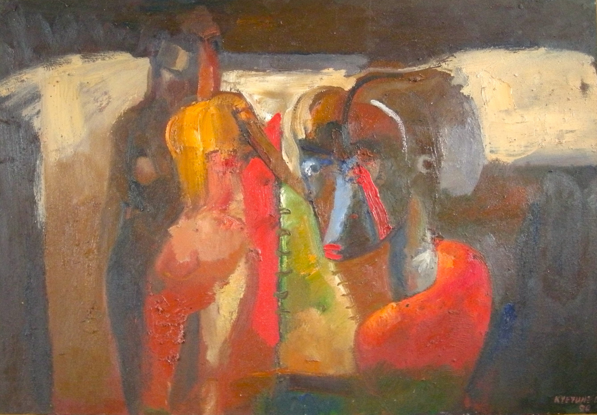

George Kyeyune
B. 1962
Artist Biography
George Kyeyune was born in Masaka, central Uganda and studied art at the Margaret Trowell School of Fine Arts, part of the university of Makerere where he graduated in 1984. He gained a scholarship to attend the University of Baroda in India in 1987 where he studied sculpture. Kyeyune has since had a career as a successful sculptor and painter in oils but he also became an arts academic teaching at Makerere university. He completed a PhD in African art history at the School of Oriental and African Studies in London and also received a later Fulbright scholarship. Kyeyune’s work, generally in an expressionist style, tries to capture scenes of ordinary life in all its mundanity and absurdity. He had a major solo exhibition of his oil paintings at the Afriart Gallery in Kampala in 2011 and was commissioned to produce a large sculpture to celebrate in 2022 the 100th anniversary of Makerere.

Untitled, 1996